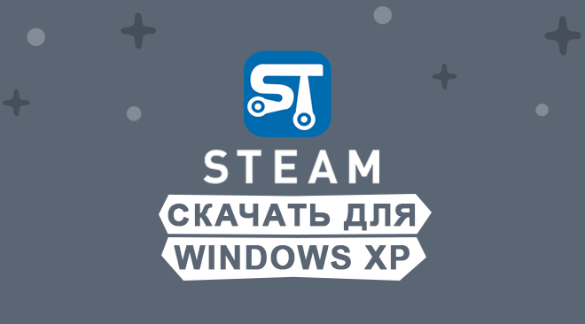

|  | Категория: | Для скачивания игр |
| Поддерживаемые ОС: | Windows XP | |
| Разрядность: | 32 bit, 64 bit, x32, x64 | |
| Для устройств: | Компьютер | |
| Язык интерфейса: | на Русском | |
| Версия: | Последняя | |
| Разработчик: | Valve |
Необходимо установить Steam на Windows Xp чтоб скачивать бесплатно или покапать лицензионные игры на компьютер. В 2003 году распространение компьютерных игр перешло на новый уровень под влиянием продукта, выпущенного компанией Valve. Да-да, мы сейчас о нашумевшем Steam! Одни называют его просто полезным онлайн-сервисом, другие — площадкой, объединяющей цифровые копии популярных игр, мы же предпочитаем скромно характеризовать его как онлайн-магазин, предназначенных для цифрового продвижения приложений (не только игр, но и классных программ, утилит, расширений).
 |
 |
 |
Steam для Windows xp на компьютер
Если кратко, то Стим вобрал в себя колоссальное множество разработок, приобрести которые может любой пользователь, создавший учетную запись. Каждое его приобретение фиксируется и реализуется при помощи присвоения уникального цифрового ключа. При этом запуск купленной программы также реализуется через Steam, что делает его функционал несколько шире, чем у аналогичных платформ. У пользователя появляется возможность получать актуальную информацию обо всех обновлениях и патчах, что позволяет оперативно избавляться от ошибок и багов в работе программы или игры. Впрочем, без стеснения можно заявить, что достойных конкурентов у Стима за 17 лет так и не появилось.

Из приятных бонусов можно отметить и продуманную новостную ленту, предназначенную для оповещения пользователей о важнейших событиях в сфере игростроения, турниров, новейших разработок. Не станет преградой и покупка тех или иных дополнений, эпизодов игр, за которыми раньше нужно было гоняться либо по магазинам, либо по разным сайтам в ожидании появления. Это именно тот случай, когда игроману не нужно больше вообще ничего, только скачать Steam на свой компьютер и наслаждаться любимым занятием круглые сутки.
Steam для версий windows:
Скачать Steam для windows xp бесплатно
| Приложение | OS | Формат | Распаковщик | Версия | Интерфейс | Загрузка |
|---|---|---|---|---|---|---|
| Steam | Windows xp | x32 | OpenBox | Бесплатно | на русском | |
| Steam | Windows xp | x64 | OpenBox | Бесплатно | на русском | |
| Steam | Windows xp | x32 — x64 | OpenBox | Бесплатно | на русском |
Как установить Steam для windows xp:
Запустите файл.

Ознакомьтесь с информацией и нажмите "Далее".

Нажмите "Далее", или снимите галочки с рекомендуемого ПО и нажмите "Далее". Если снять все галочки, рекомендуемое ПО не установится!

После всех шагов нажмите "Установить".

Примечательно и то, что взаимодействовать с платформой можно как с мобильных устройств, так и с компьютера: версии адаптированы как под современную iOS, так и под старичка Windows XP. Разумеется, вниманием не были обделены и Android, Windows Phone, Linux и MacOS. Ну а куда без них? Нельзя не отметить и очень гибкую ценовую политику: разориться на продуктах, предлагаемых для покупки, невозможно. И это при том, что в список партнеров входят и такие гиганты, как Eidos, Capcom и Atari, которые имеют все основания для поднятия ценника.
спасибо большое
Приложение супер. тянет даже на минималках
что хотела нашла, я прошлый аккаунт запорола теперь буду осторожнее
Неужели Steam будет работать на Windows XP? Как-то даже не задумывался об этом… Любопытно было бы взглянуть 😎
неа, с 19-го года не поддерживает на хр и висте. А печально
Играю с удовольствием.
я хотел поиграть в игры в стиме хотя у меня виндовс xp я вбил стим на виндовс xp скачал а он гаварил что на маю версию виндовса нету стима хотя этот стим для виндовс xp напишите пажалуеста пачиму так